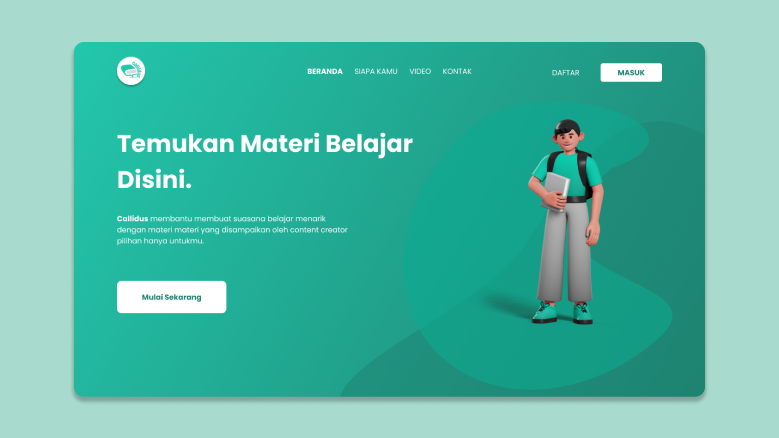
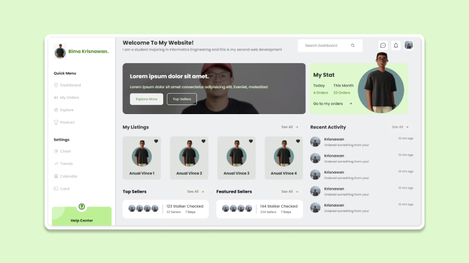

"Through the crucible of challenges, one discovers the art of resilience and the fortitude to endure
Bima Krisnawan
As a junior in programming, I am dedicated to crafting captivating digital experiences. With a blend of technical skills and a creative mindset, my passion lies in designing intuitive interfaces that enhance user satisfaction. Meticulous attention to detail and a drive for innovation allow me to continuously learn and grow in this field, delivering impactful solutions.
Digital Innovation
Competition
We Create Callidus. Together with my team, we successfully achieved the Runner-up in the Digital Innovation (IESCO) at Satya Wacana Christian University
Intern at
Alfamart
Throwback to the early days! This photo captures a special moment from our early days as IT interns at Alfamart, under the guidance of PT Sumber Alfaria Trijaya Tbk. It's amazing to reflect on how far we've come since then, just a few days into our internship.
Latest Projects
-
See full project
Callidus UI
Web DesignThe website's layout functions as an educational resource for students, offering various captivating features.

-
See full project
Dashboard Website with
ReactSimplicity, modernity, and aesthetics come together for the website's appearance.
